Changes in PRIMAP-hist v2.6_final compared to v2.5.1_final for Zambia
2024-09-24
Johannes Gütschow
Change analysis for Zambia for PRIMAP-hist v2.6_final compared to v2.5.1_final
Overview over emissions by sector and gas
The following figures show the aggregate national total emissions excluding LULUCF AR6GWP100 for the country reported priority scenario. The dotted linesshow the v2.5.1_final data.
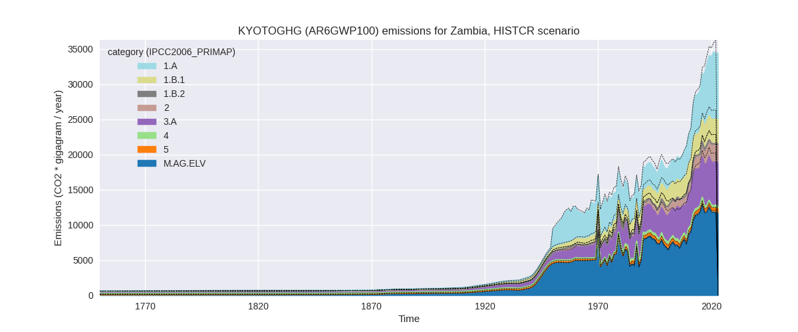
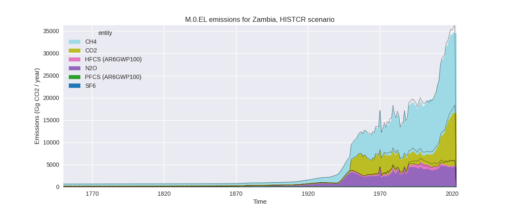
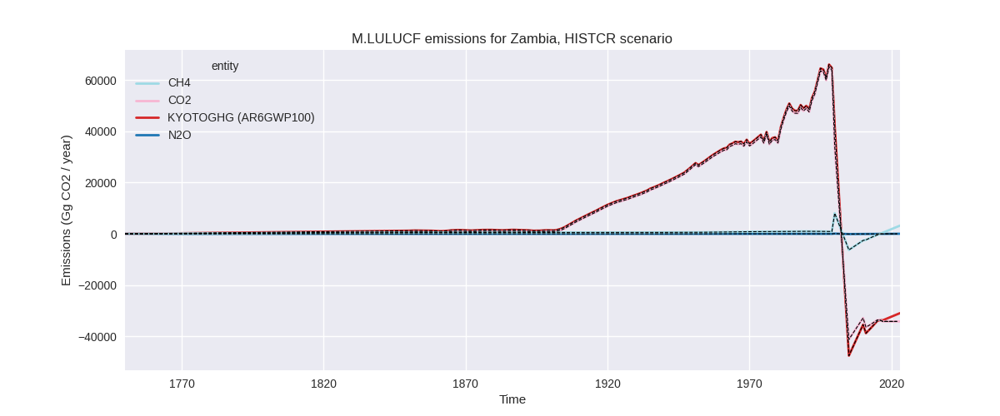
The following figures show the aggregate national total emissions excluding LULUCF AR6GWP100 for the third party priority scenario. The dotted linesshow the v2.5.1_final data.
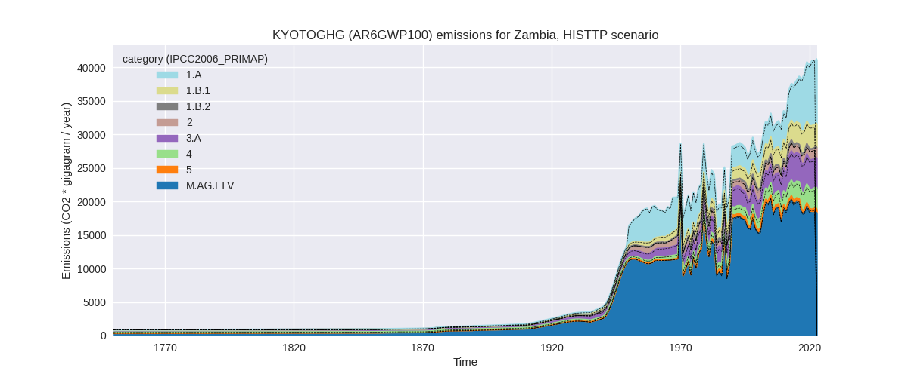
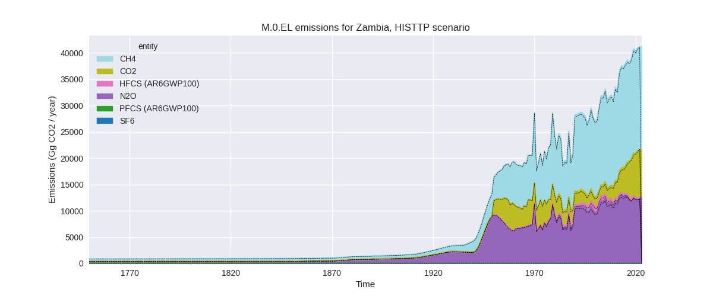
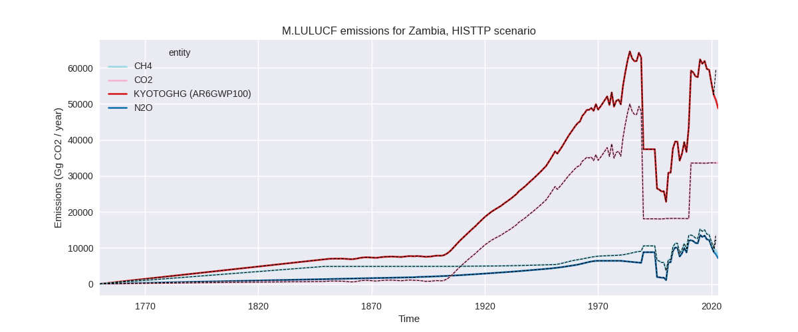
Overview over changes
In the country reported priority scenario we have the following changes for aggregate Kyoto GHG and national total emissions excluding LULUCF (M.0.EL):
- Emissions in 2022 have changed by -5.5%% (-1998.37 Gg CO2 / year)
- Emissions in 1990-2022 have changed by -3.0%% (-726.83 Gg CO2 / year)
In the third party priority scenario we have the following changes for aggregate Kyoto GHG and national total emissions excluding LULUCF (M.0.EL):
- Emissions in 2022 have changed by -0.5%% (-196.10 Gg CO2 / year)
- Emissions in 1990-2022 have changed by 1.1%% (348.67 Gg CO2 / year)
Most important changes per scenario and time frame
In the country reported priority scenario the following sector-gas combinations have the highest absolute impact on national total KyotoGHG (AR6GWP100) emissions in 2022 (top 5):
- 1: 3.A, N2O with -1619.53 Gg CO2 / year (-90.0%)
- 2: 1.A, CO2 with -691.52 Gg CO2 / year (-7.2%)
- 3: 5, N2O with 307.89 Gg CO2 / year (87.1%)
- 4: 4, N2O with 8.55 Gg CO2 / year (4.5%)
- 5: 4, CH4 with -6.26 Gg CO2 / year (-2.6%)
In the country reported priority scenario the following sector-gas combinations have the highest absolute impact on national total KyotoGHG (AR6GWP100) emissions in 1990-2022 (top 5):
- 1: 3.A, N2O with -1308.33 Gg CO2 / year (-93.0%)
- 2: 5, N2O with 362.24 Gg CO2 / year (187.2%)
- 3: 3.A, CH4 with 243.31 Gg CO2 / year (5.8%)
- 4: 1.A, CO2 with -21.41 Gg CO2 / year (-0.6%)
- 5: 2, HFCS (AR6GWP100) with -4.81 Gg CO2 / year (-0.8%)
In the third party priority scenario the following sector-gas combinations have the highest absolute impact on national total KyotoGHG (AR6GWP100) emissions in 2022 (top 5):
- 1: 1.A, CO2 with -573.85 Gg CO2 / year (-7.2%)
- 2: 5, N2O with 307.89 Gg CO2 / year (87.1%)
- 3: 4, CH4 with 61.58 Gg CO2 / year (2.2%)
- 4: 4, N2O with 8.63 Gg CO2 / year (4.4%)
- 5: 4, CO2 with -0.36 Gg CO2 / year (-16.4%)
In the third party priority scenario the following sector-gas combinations have the highest absolute impact on national total KyotoGHG (AR6GWP100) emissions in 1990-2022 (top 5):
- 1: 5, N2O with 362.24 Gg CO2 / year (187.2%)
- 2: 1.A, CO2 with -17.77 Gg CO2 / year (-0.5%)
- 3: 4, CH4 with 6.19 Gg CO2 / year (0.3%)
- 4: 2, HFCS (AR6GWP100) with -4.81 Gg CO2 / year (-0.8%)
- 5: 4, N2O with 2.76 Gg CO2 / year (2.4%)
Notes on data changes
Here we list notes explaining important emissions changes for the country. ’' means that the following text only applies to the TP time series, while means that it only applies to the CR scenario. Otherwise the note applies to both scenarios.
- N2O in 3.A is lower in the CR time-series as the data from different submissions was inconsistent (BUR1 does not estimate N2O in 3.A). The CR time-series now uses FAOSTAT data. CH4 in 3.A is now higher as emissions were wrongly attributed to N2O during the downscaling.
- 2022 energy CO2 data is lower because EI data for 2022 has been adjusted (CR, TP).
- N2O in other (5) is higher because EDGAR has replaced FAOSTAT (which was included though an error) (CR, TP)
Changes by sector and gas
For each scenario and time frame the changes are displayed for all individual sectors and all individual gases. In the sector plot we use aggregate Kyoto GHGs in AR6GWP100. In the gas plot we usenational total emissions without LULUCF. ## country reported scenario
2022
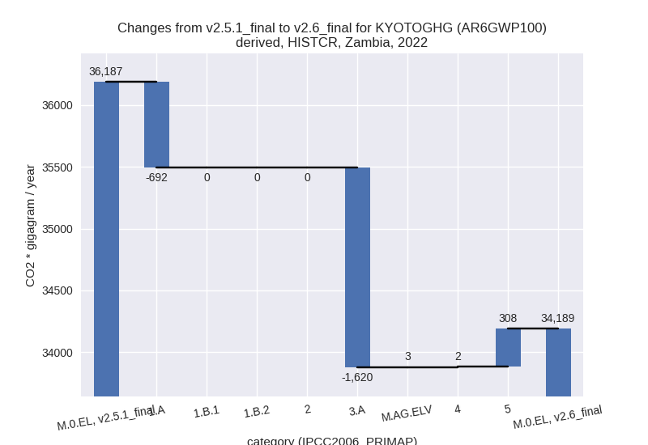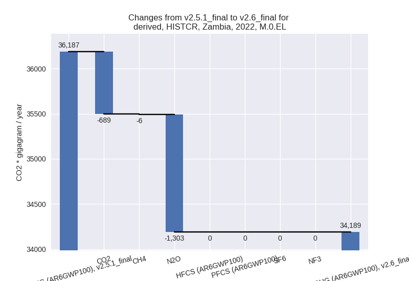
1990-2022
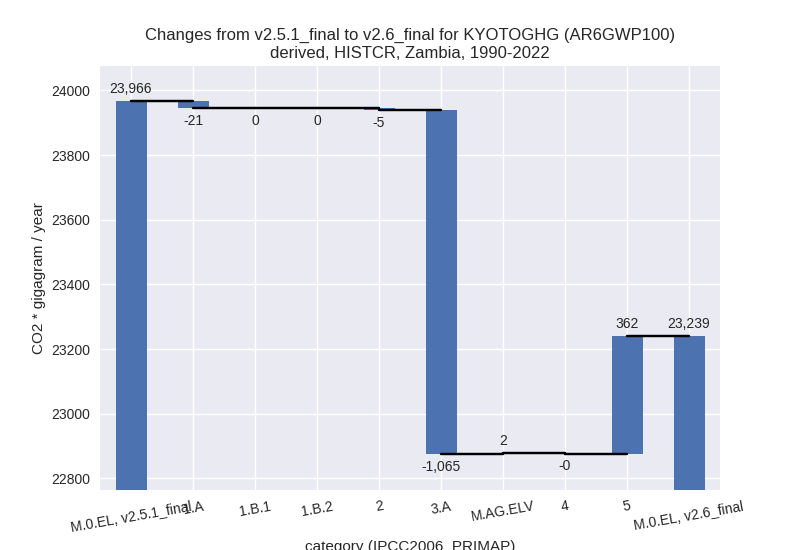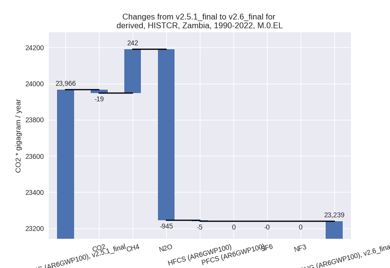
third party scenario
2022
 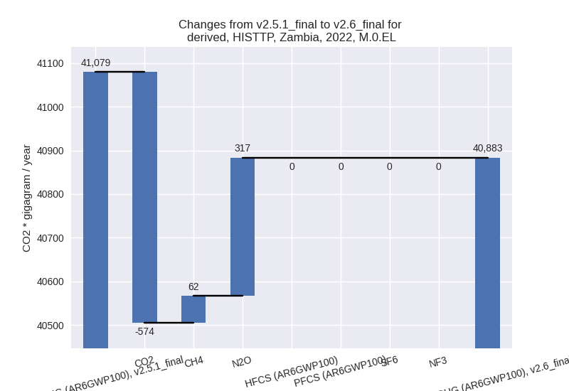
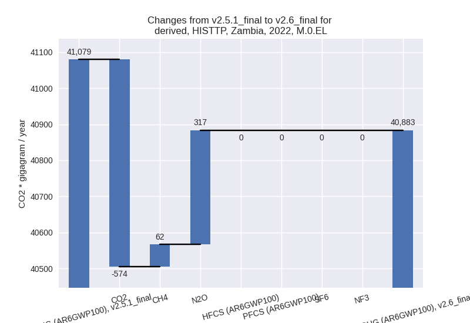
1990-2022
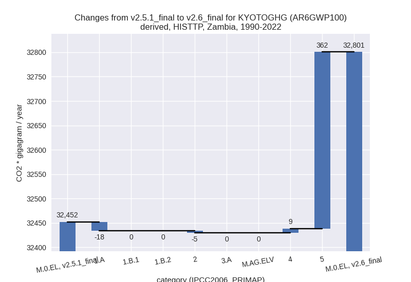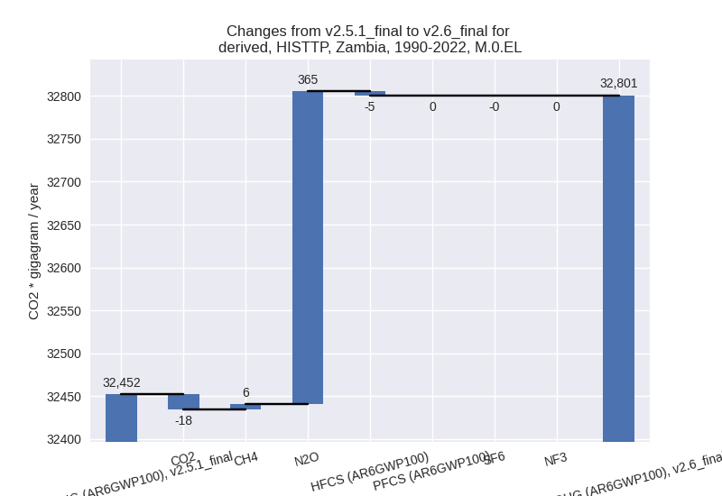
Detailed changes for the scenarios:
country reported scenario (HISTCR):
Most important changes per time frame
For 2022 the following sector-gas combinations have the highest absolute impact on national total KyotoGHG (AR6GWP100) emissions in 2022 (top 5):
- 1: 3.A, N2O with -1619.53 Gg CO2 / year (-90.0%)
- 2: 1.A, CO2 with -691.52 Gg CO2 / year (-7.2%)
- 3: 5, N2O with 307.89 Gg CO2 / year (87.1%)
- 4: 4, N2O with 8.55 Gg CO2 / year (4.5%)
- 5: 4, CH4 with -6.26 Gg CO2 / year (-2.6%)
For 1990-2022 the following sector-gas combinations have the highest absolute impact on national total KyotoGHG (AR6GWP100) emissions in 1990-2022 (top 5):
- 1: 3.A, N2O with -1308.33 Gg CO2 / year (-93.0%)
- 2: 5, N2O with 362.24 Gg CO2 / year (187.2%)
- 3: 3.A, CH4 with 243.31 Gg CO2 / year (5.8%)
- 4: 1.A, CO2 with -21.41 Gg CO2 / year (-0.6%)
- 5: 2, HFCS (AR6GWP100) with -4.81 Gg CO2 / year (-0.8%)
Changes in the main sectors for aggregate KyotoGHG (AR6GWP100) are
- 1: Total sectoral emissions in 2022 are 12682.48 Gg
CO2 / year which is 37.1% of M.0.EL emissions. 2022 Emissions have
changed by -5.2% (-691.52 Gg CO2 /
year). 1990-2022 Emissions have changed by -0.3% (-21.41 Gg CO2 / year). For 2022 the
changes per gas
are:
The changes come from the following subsectors:- 1.A: Total sectoral emissions in 2022 are 9226.69
Gg CO2 / year which is 72.8% of category 1 emissions. 2022 Emissions
have changed by -7.0% (-691.52 Gg
CO2 / year). 1990-2022 Emissions have changed by -0.5% (-21.41 Gg CO2 / year). For 2022 the
changes per gas
are:
There is no subsector information available in PRIMAP-hist. - 1.B.1: Total sectoral emissions in 2022 are 3453.76 Gg CO2 / year which is 27.2% of category 1 emissions. 2022 Emissions have changed by 0.0% (0.00 Gg CO2 / year). 1990-2022 Emissions have changed by 0.0% (0.00 Gg CO2 / year).
- 1.B.2: Total sectoral emissions in 2022 are 2.03 Gg CO2 / year which is 0.0% of category 1 emissions. 2022 Emissions have changed by 0.0% (0.00 Gg CO2 / year). 1990-2022 Emissions have changed by 0.0% (0.00 Gg CO2 / year).
- 1.A: Total sectoral emissions in 2022 are 9226.69
Gg CO2 / year which is 72.8% of category 1 emissions. 2022 Emissions
have changed by -7.0% (-691.52 Gg
CO2 / year). 1990-2022 Emissions have changed by -0.5% (-21.41 Gg CO2 / year). For 2022 the
changes per gas
are:
- 2: Total sectoral emissions in 2022 are 2612.51 Gg CO2 / year which is 7.6% of M.0.EL emissions. 2022 Emissions have changed by 0.0% (0.00 Gg CO2 / year). 1990-2022 Emissions have changed by -0.3% (-4.72 Gg CO2 / year).
- M.AG: Total sectoral emissions in 2022 are 17797.80
Gg CO2 / year which is 52.1% of M.0.EL emissions. 2022 Emissions have
changed by -8.3% (-1616.68 Gg CO2 /
year). 1990-2022 Emissions have changed by -7.3% (-1062.77 Gg CO2 / year). For 2022
the changes per gas
are:
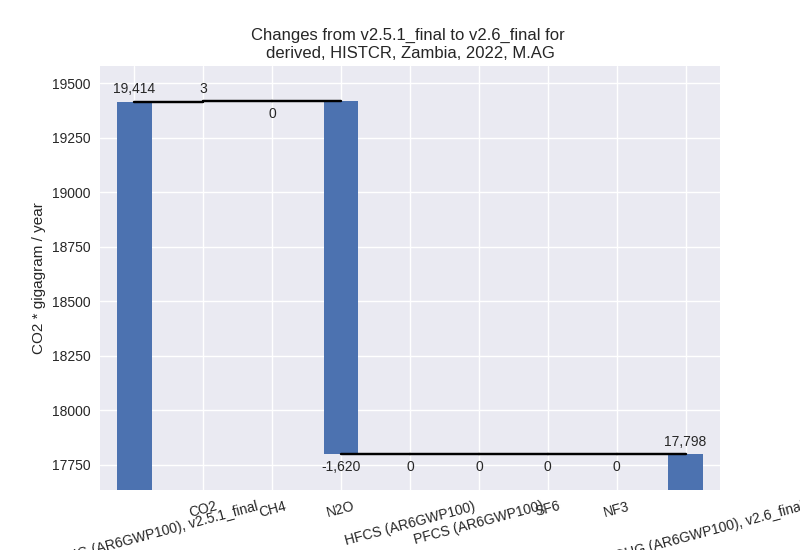
For 1990-2022 the changes per gas are:
The changes come from the following subsectors:- 3.A: Total sectoral emissions in 2022 are 6078.82
Gg CO2 / year which is 34.2% of category M.AG emissions. 2022 Emissions
have changed by -21.0% (-1619.53 Gg
CO2 / year). 1990-2022 Emissions have changed by -19.0% (-1065.01 Gg CO2 / year). For 2022
the changes per gas
are:

For 1990-2022 the changes per gas are:
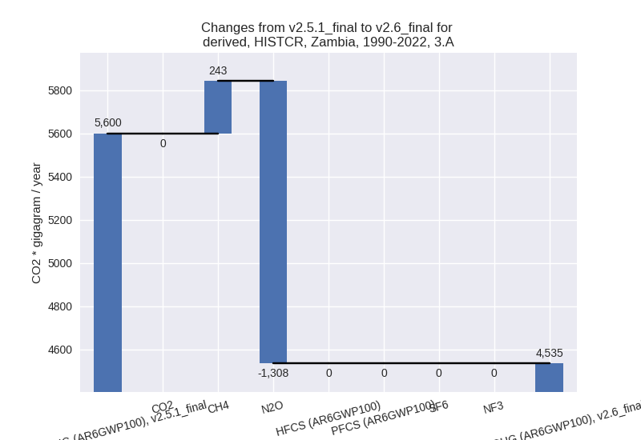
There is no subsector information available in PRIMAP-hist. - M.AG.ELV: Total sectoral emissions in 2022 are 11718.98 Gg CO2 / year which is 65.8% of category M.AG emissions. 2022 Emissions have changed by 0.0% (2.85 Gg CO2 / year). 1990-2022 Emissions have changed by 0.0% (2.25 Gg CO2 / year).
- 3.A: Total sectoral emissions in 2022 are 6078.82
Gg CO2 / year which is 34.2% of category M.AG emissions. 2022 Emissions
have changed by -21.0% (-1619.53 Gg
CO2 / year). 1990-2022 Emissions have changed by -19.0% (-1065.01 Gg CO2 / year). For 2022
the changes per gas
are:
- 4: Total sectoral emissions in 2022 are 434.89 Gg CO2 / year which is 1.3% of M.0.EL emissions. 2022 Emissions have changed by 0.4% (1.94 Gg CO2 / year). 1990-2022 Emissions have changed by -0.0% (-0.17 Gg CO2 / year).
- 5: Total sectoral emissions in 2022 are 661.31 Gg
CO2 / year which is 1.9% of M.0.EL emissions. 2022 Emissions have
changed by 87.1% (307.89 Gg CO2 /
year). 1990-2022 Emissions have changed by 187.2% (362.24 Gg CO2 / year). For 2022
the changes per gas
are:
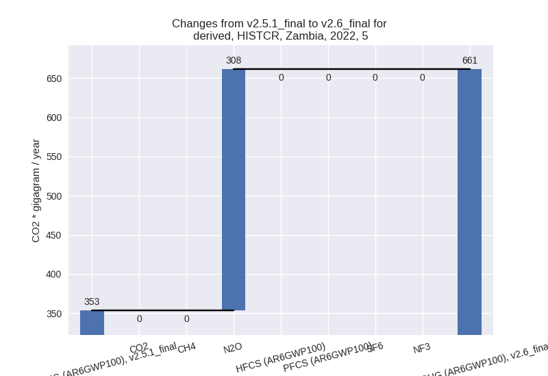
For 1990-2022 the changes per gas are:
third party scenario (HISTTP):
Most important changes per time frame
For 2022 the following sector-gas combinations have the highest absolute impact on national total KyotoGHG (AR6GWP100) emissions in 2022 (top 5):
- 1: 1.A, CO2 with -573.85 Gg CO2 / year (-7.2%)
- 2: 5, N2O with 307.89 Gg CO2 / year (87.1%)
- 3: 4, CH4 with 61.58 Gg CO2 / year (2.2%)
- 4: 4, N2O with 8.63 Gg CO2 / year (4.4%)
- 5: 4, CO2 with -0.36 Gg CO2 / year (-16.4%)
For 1990-2022 the following sector-gas combinations have the highest absolute impact on national total KyotoGHG (AR6GWP100) emissions in 1990-2022 (top 5):
- 1: 5, N2O with 362.24 Gg CO2 / year (187.2%)
- 2: 1.A, CO2 with -17.77 Gg CO2 / year (-0.5%)
- 3: 4, CH4 with 6.19 Gg CO2 / year (0.3%)
- 4: 2, HFCS (AR6GWP100) with -4.81 Gg CO2 / year (-0.8%)
- 5: 4, N2O with 2.76 Gg CO2 / year (2.4%)
Changes in the main sectors for aggregate KyotoGHG (AR6GWP100) are
- 1: Total sectoral emissions in 2022 are 12873.08 Gg
CO2 / year which is 31.5% of M.0.EL emissions. 2022 Emissions have
changed by -4.3% (-573.85 Gg CO2 /
year). 1990-2022 Emissions have changed by -0.2% (-17.77 Gg CO2 / year). For 2022 the
changes per gas
are:
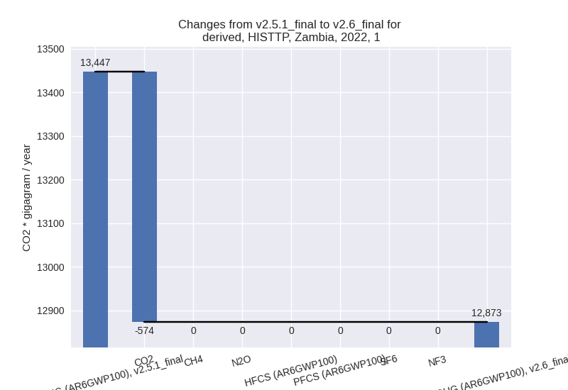
The changes come from the following subsectors:- 1.A: Total sectoral emissions in 2022 are 9417.28
Gg CO2 / year which is 73.2% of category 1 emissions. 2022 Emissions
have changed by -5.7% (-573.85 Gg
CO2 / year). 1990-2022 Emissions have changed by -0.4% (-17.77 Gg CO2 / year). For 2022 the
changes per gas
are:
There is no subsector information available in PRIMAP-hist. - 1.B.1: Total sectoral emissions in 2022 are 3453.76 Gg CO2 / year which is 26.8% of category 1 emissions. 2022 Emissions have changed by 0.0% (0.00 Gg CO2 / year). 1990-2022 Emissions have changed by 0.0% (0.00 Gg CO2 / year).
- 1.B.2: Total sectoral emissions in 2022 are 2.03 Gg CO2 / year which is 0.0% of category 1 emissions. 2022 Emissions have changed by 0.0% (0.00 Gg CO2 / year). 1990-2022 Emissions have changed by 0.0% (0.00 Gg CO2 / year).
- 1.A: Total sectoral emissions in 2022 are 9417.28
Gg CO2 / year which is 73.2% of category 1 emissions. 2022 Emissions
have changed by -5.7% (-573.85 Gg
CO2 / year). 1990-2022 Emissions have changed by -0.4% (-17.77 Gg CO2 / year). For 2022 the
changes per gas
are:
- 2: Total sectoral emissions in 2022 are 1601.52 Gg CO2 / year which is 3.9% of M.0.EL emissions. 2022 Emissions have changed by 0.0% (0.00 Gg CO2 / year). 1990-2022 Emissions have changed by -0.3% (-4.72 Gg CO2 / year).
- M.AG: Total sectoral emissions in 2022 are 22683.74 Gg CO2 / year which is 55.5% of M.0.EL emissions. 2022 Emissions have changed by 0.0% (0.00 Gg CO2 / year). 1990-2022 Emissions have changed by 0.0% (0.00 Gg CO2 / year).
- 4: Total sectoral emissions in 2022 are 3063.61 Gg
CO2 / year which is 7.5% of M.0.EL emissions. 2022 Emissions have
changed by 2.3% (69.86 Gg CO2 /
year). 1990-2022 Emissions have changed by 0.5% (8.91 Gg CO2 / year). For 2022 the
changes per gas
are:
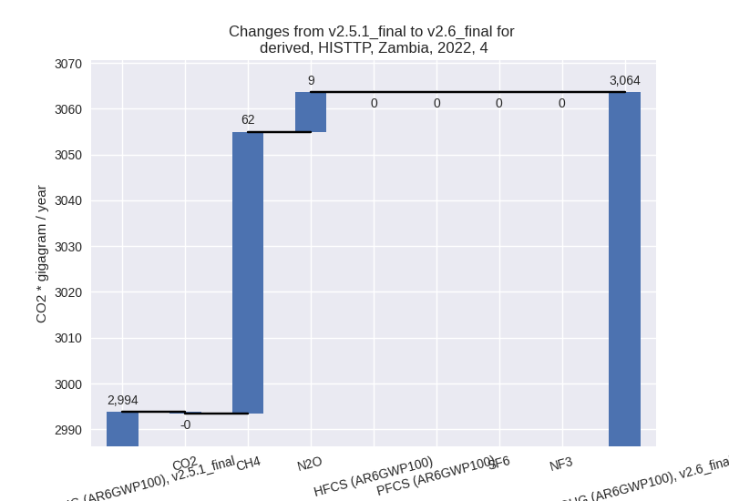 - 5: Total sectoral emissions in 2022 are 661.31 Gg
CO2 / year which is 1.6% of M.0.EL emissions. 2022 Emissions have
changed by 87.1% (307.89 Gg CO2 /
year). 1990-2022 Emissions have changed by 187.2% (362.24 Gg CO2 / year). For 2022
the changes per gas
are:
For 1990-2022 the changes per gas are: